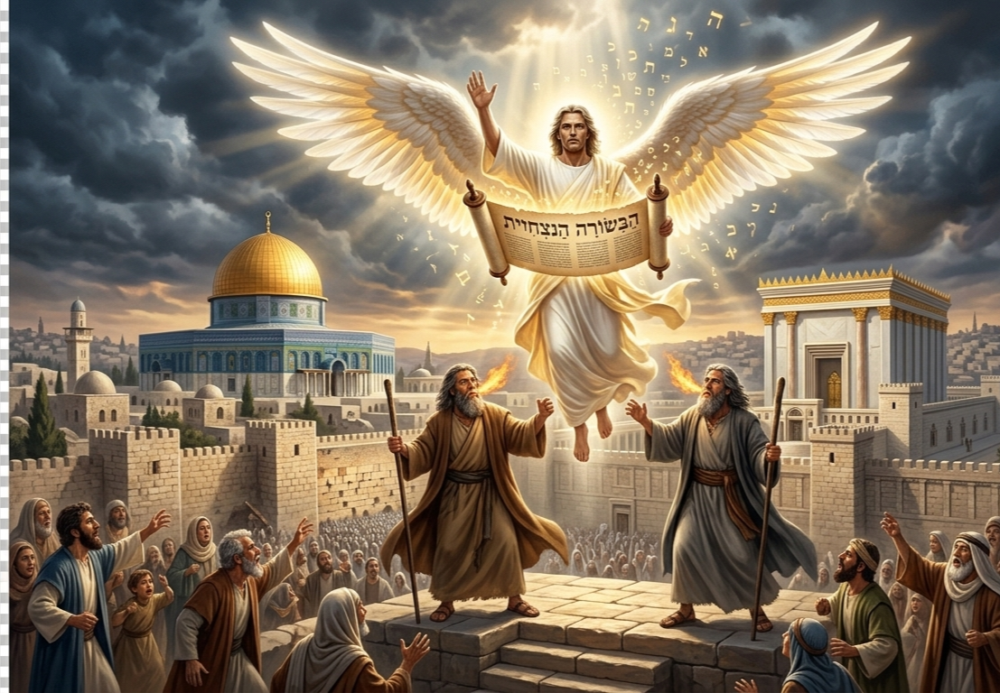

A Grande Tribulação não é uma profecia direcionada à Igreja. O foco profético desse período é Israel.
Quando observamos o conjunto das Escrituras, percebemos que esse tempo corresponde ao fechamento de um ciclo iniciado durante a Era da Graça.
Durante o período atual, algo específico aconteceu no plano divino.
Os ouvidos espirituais de Israel foram parcialmente fechados.
Ao mesmo tempo, os ouvidos das nações gentílicas foram abertos para receber o Evangelho.
Paulo explica esse mistério de forma direta:
“O endurecimento veio em parte sobre Israel, até que haja entrado a plenitude dos gentios.”
Esse texto revela a existência de um limite.
Não se trata de um processo infinito.
Existe um ponto específico em que o número da colheita gentílica estará completo.
A analogia bíblica mais poderosa para compreender esse momento é a Arca de Noé.
Enquanto a porta da arca estava aberta, havia oportunidade de entrar.
Mas chegou um momento em que o próprio Deus fechou a porta.
Depois disso, não havia mais entrada possível.
O Arrebatamento representa exatamente esse momento profético.
Não é apenas um evento de retirada da Igreja da Terra.
Ele também marca o encerramento da oportunidade gentílica dentro do plano da graça.
Quando a plenitude dos gentios se completa, a engrenagem profética gira novamente.
Mas ela gira de forma inversa.
Os papéis espirituais se invertem.
Os ouvidos que estavam abertos passam a se fechar.
E os que estavam fechados passam a se abrir.
Durante a Tribulação ocorre exatamente essa inversão.
Os ouvidos das nações gentílicas se fecham.
O mundo entra em um estado espiritual descrito pelas Escrituras como “operação do erro”.
Paulo descreve esse momento dizendo que Deus enviará um engano poderoso para que creiam na mentira.
Aqueles que rejeitaram a verdade durante o período da graça passam a viver sob um juízo espiritual.
Por outro lado, aquilo que estava impedindo a percepção espiritual de Israel começa a ser removido.
O endurecimento parcial que Paulo mencionou deixa de operar.
O foco profético de Deus retorna para o povo da aliança.
É por isso que o ambiente da Grande Tribulação é flagrantemente judaico.
As profecias de Daniel, Ezequiel e Zacarias convergem para esse cenário.
Jeremias descreve esse período com uma expressão muito específica.
“Tempo de angústia para Jacó.”
Daniel afirma que as setenta semanas proféticas foram determinadas sobre o povo de Daniel e sobre a cidade santa.
Isso significa que o objetivo central desse período é lidar com a história espiritual de Israel.
O Pós-tribulacionismo comete um erro fundamental quando tenta inserir a Igreja nesse período.
Ao fazer isso, ele desloca o foco da profecia.
Uma profecia direcionada a Israel passa a ser aplicada à Igreja.
Isso cria um problema de coerência profética.
Se a septuagésima semana de Daniel foi designada para tratar da transgressão de Israel e conduzir a nação à justiça eterna, inserir a Igreja nesse período quebra a precisão do cronograma profético.
Outro problema teológico surge quando se defende a ideia de uma conversão gentílica em massa durante a Tribulação.
Se o Arrebatamento ocorre porque a plenitude dos gentios foi alcançada, então a cota da colheita gentílica está completa.
A analogia da Arca volta a se tornar decisiva.
Quando a porta se fecha, ela se fecha.
Defender uma grande conversão de gentios após o Arrebatamento seria equivalente a afirmar que a porta da Arca nunca foi realmente fechada.
Além disso, existe o problema da chamada “segunda chance”.
Se alguém pode rejeitar o Evangelho hoje e ainda assim ter oportunidade de salvação após o Arrebatamento, a urgência da mensagem cristã perde sua força.
Mas as Escrituras descrevem um cenário diferente.
Em vez de um avivamento global entre as nações, o que aparece é um ambiente de engano espiritual profundo.
O sistema do Anticristo se estabelece com poder político, religioso e econômico.
Esse sistema é descrito simbolicamente como Babilônia.
Babilônia representa a estrutura final de rebelião humana contra Deus.
Enquanto Jerusalém se torna o centro do conflito espiritual, Babilônia se torna o centro do sistema mundial que se opõe ao governo divino.
É nesse contexto que surge a proclamação do chamado Evangelho Eterno.
No cenário da Grande Tribulação surge uma proclamação diferente daquela ouvida durante a Era da Graça.
Enquanto o Evangelho da Graça convida o pecador ao arrependimento por meio da misericórdia divina, o chamado conhecido como Evangelho Eterno aparece em um contexto de juízo iminente.
Ele não é apresentado como um convite suave.
Ele surge como um alerta universal.
Um anjo voa pelo meio do céu proclamando com grande voz:
"Temei a Deus e dai-lhe glória, porque é chegada a hora do seu juízo; e adorai aquele que fez o céu, a terra, o mar e as fontes das águas."
Essa proclamação acontece quando o sistema mundial do Anticristo já domina o planeta.
O poder da Besta controla estruturas políticas, econômicas e religiosas.
As nações estão presas dentro de um sistema global de engano.
O Evangelho Eterno surge exatamente para confrontar essa falsa ordem.
Ele desmascara a grande mentira do sistema da Besta.
A mensagem é simples e direta:
Adorem o Criador, não a criatura.
Essa proclamação representa a última advertência antes da execução do juízo divino.
Deus anuncia o veredito antes de derrubar o sistema que enganou as nações.
Se o ambiente profético da Tribulação é claramente judaico, então Babilônia aparece como a falsificação global que se opõe a esse plano.
Enquanto Jerusalém se torna o centro do conflito espiritual da Terra, Babilônia se estabelece como o centro do sistema mundial que desafia o governo de Deus.
As Escrituras descrevem Babilônia como uma entidade que embriaga as nações.
O texto afirma que ela faz os povos beberem do vinho da fúria da sua fornicação.
Essa linguagem revela um sistema espiritual de sedução coletiva.
As nações não apenas participam desse sistema.
Elas são seduzidas por ele.
Enquanto as Duas Testemunhas proclamam a verdade em Jerusalém, Babilônia espalha sua influência sobre toda a Terra.
Mas esse domínio não dura para sempre.
Logo após a proclamação do Evangelho Eterno, um segundo anjo anuncia:
"Caiu, caiu a grande Babilônia."
Esse anúncio não é apenas simbólico.
Ele representa o colapso da estrutura que sustenta o governo do Anticristo.
Quando Babilônia cai, o sistema político, econômico e religioso que dominava as nações começa a desmoronar.
É o momento em que Deus declara que a infraestrutura do engano foi julgada.
Um anjo voa pelo meio do céu anunciando:
“Temei a Deus e dai-lhe glória, porque é chegada a hora do seu juízo.”
Esse anúncio não é idêntico ao Evangelho da Graça pregado pela Igreja.
O foco aqui é o juízo iminente e a soberania do Criador.
Logo após essa proclamação vem outra declaração impactante.
“Caiu, caiu a grande Babilônia.”
Essa sequência revela algo profundo.
O anúncio do Evangelho Eterno prepara o terreno para a queda do sistema que enganou as nações.
Enquanto isso, um grupo específico de pessoas aparece nas visões de João.
Uma multidão incontável diante do trono de Deus.
Quando João pergunta quem são, recebe a resposta:
“Estes são os que vieram da grande tribulação.”
Eles lavaram suas vestes no sangue do Cordeiro.
Esse grupo não é descrito como a Noiva.
A Igreja já foi retirada da Terra.
Esses são os santos da Tribulação.
Eles não escapam do período de sofrimento.
Eles passam por ele.
Muitos deles pagam com a própria vida por sua fidelidade.
Essa distinção revela uma estrutura importante dentro do plano redentor.
A Igreja aparece nas Escrituras como a Noiva do Cordeiro.
Israel aparece como a nação restaurada.
E os santos da Tribulação surgem como aqueles que permanecem fiéis durante o colapso final do sistema da Besta.
Assim se forma o cenário completo da Tribulação.
Não é a continuação da Era da Graça.
É o período em que Deus retoma o trato profético direto com Israel.
E nesse processo final, o povo que um dia rejeitou o Messias finalmente reconhecerá Aquele a quem traspassaram.
